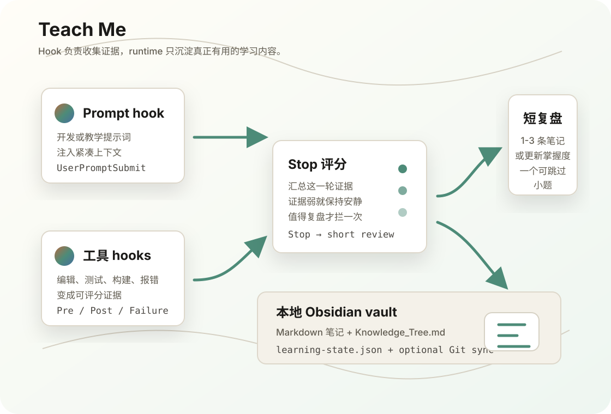

看证据，不看热闹
编辑、测试、构建、报错、验证都会变成轻量事件。真正有学习价值的阶段，才会进入复盘。
把开发过程变成学习资产
我不想让 agent 每次都讲课，也不想它只把活干完。Teach Me 会看这一轮真正发生了什么：有没有改代码、跑测试、踩坑、验证；值得复盘时，才插入一次短的学习整理。
支持 Claude Code、Codex、OpenClaw、Kimi Code CLI。默认写到 ~/.teach_me_skill/vault，Git 同步是可选项，不会默认推到远端。

$ python3 skills/teach-me/scripts/teach_me.py context
Teach Me learning context:
- vault: ~/.teach_me_skill/vault
- capture only high-value development knowledge
- keep implementation flow uninterruptedWhy
现在的 Teach Me 不是看到关键词就写笔记。它先收集一轮开发里的证据，再在 Stop 阶段评分：证据弱就安静，证据强才请求一次短复盘。
编辑、测试、构建、报错、验证都会变成轻量事件。真正有学习价值的阶段，才会进入复盘。
遇到新领域，先扫 prerequisite ladder，确认基础词有没有断层，再从第一个弱点讲起。
笔记是普通 Markdown。知识树、掌握程度、复习问题和可选 Git sync 都围绕本地 Obsidian vault 工作。
How
Prompt hook 负责提醒 agent 可以使用 Teach Me；Tool hooks 记录实际发生的开发证据；Stop hook 只在证据足够时请求一次短复盘。真正写文件的事交给本地 runtime。
Hooks
安装脚本只追加 Teach Me 自己的 marker，不覆盖已有 hook。Codex 会补 [features] 和 writable root；Kimi 会只重写 hooks = [...] 这一段。
| 平台 | 注册位置 | 事件 | Teach Me 行为 |
|---|---|---|---|
| Claude Code | ~/.claude/settings.json |
UserPromptSubmit、PreToolUse、PostToolUse、Stop |
显式学习/开发提示词注入上下文；工具事件计分；Stop 阶段可能请求一次短复盘。 |
| Codex | ~/.codex/config.toml |
UserPromptSubmit、PreToolUse、PostToolUse、Stop |
自动打开 [features] hooks = true，追加 Teach Me hook block，并把 ~/.teach_me_skill 加入 writable root。 |
| Kimi Code CLI | ~/.kimi/config.toml |
UserPromptSubmit、工具事件、Stop |
复用共享 ~/.agents/skills/teach-me 路径，按支持的 hook 事件记录证据和触发复盘。 |
| OpenClaw | ~/.openclaw/hooks/teach-me-learning |
message:received、agent:bootstrap |
先记录 session 是否是开发学习场景，再在 bootstrap 文件里追加 Teach Me context。OpenClaw 的真正 final-review 需要插件层支持。 |
hook 不直接“教”。它负责提供上下文和证据；要不要写笔记、写哪几个点，仍由 agent 在阶段边界按 skill rubric 判断。
Install
想省事就把第一段复制给 agent。手动装也很直接：根目录 install.sh 负责复制 skill，各平台的 install-hook.sh 负责接入 hook。
把这段发给 Claude Code、Codex、OpenClaw 或 Kimi Code CLI。
请帮我安装 Teach Me 这个 Agent Skill（会同时安装 Teach Me、Teach Me Check 和 Teach Me Recap）：
1. 克隆 https://github.com/dull-bird/teach-me-skill.git
2. 进入 teach-me-skill，运行 ./install.sh（只复制 skill 文件，不要安装任何额外依赖或测试工具）
3. 如果我使用 Claude Code，运行 ./claude-code/install-hook.sh
4. 如果我使用 Codex，运行 ./codex/install-hook.sh
5. 如果我使用 OpenClaw，运行 ./openclaw/install-hook.sh
6. 如果我使用 Kimi Code CLI，运行 ./kimi/install-hook.sh
7. 安装后运行：
python3 ~/.codex/skills/teach-me/scripts/teach_me.py context
或对应 agent skills 目录下的 scripts/teach_me.py context
8. 之后可以随时检查状态：
python3 ~/.codex/skills/check/scripts/check_me.py report
9. 想复习时可以说“帮我复习一下”，agent 会调用：
python3 ~/.codex/skills/recap/scripts/recap.py next
10. 第一次写学习笔记前，先让我确认 vault 路径、笔记语言，以及是否启用 Git syncgit clone https://github.com/dull-bird/teach-me-skill.git
cd teach-me-skill
./install.sh
# Optional hooks
./claude-code/install-hook.sh
./codex/install-hook.sh
./openclaw/install-hook.sh
./kimi/install-hook.sh默认 vault 是 ~/.teach_me_skill/vault。如果你想在多台机器上接着学，给它一个 Git remote，它会在写入后自动同步。
python3 ~/.codex/skills/teach-me/scripts/teach_me.py configure --language auto
# Use a custom vault path
python3 ~/.codex/skills/teach-me/scripts/teach_me.py configure \
--vault ~/Documents/Teach-Me-Vault \
--language auto
# Optional: sync the vault across devices
python3 ~/.codex/skills/teach-me/scripts/teach_me.py configure \
--language auto \
--git-remote git@github.com:user/teach-me-vault.git \
--auto-syncVault
可读笔记放在可见文件夹；机器状态放在 .teach-me/。默认不会同步到远端，除非你自己打开 Git sync。
vault/
├── 00_Index.md
├── 01_Knowledge_Graph.md
├── 02_Concepts/
├── 03_Algorithmic_Ideas/
├── 04_Project_Maps/
├── 05_Socratic_Questions/
├── 06_Reviews/
├── 07_Learning_Profile/
│ └── Knowledge_Tree.md
└── .teach-me/
├── learning-state.json
├── style-profile.json
└── events.jsonl